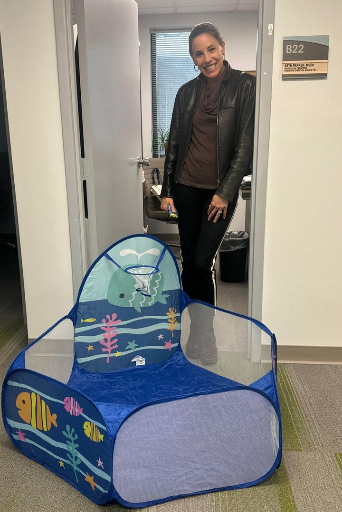

- Filters:
- All
Thank you Virginia Beach GrowSmart for having us at the Celebrating Children Event this past Saturday. What a success! We have so many other pictures to share but for now, enjoy these ☺️
Thank you to all of those who came by our table to learn about Minus 9 to 5 and The Basics HR! We love sharing resources with the community.
#communityfirst #earlyeducation #celebratingchildren #virginiachildcare- 
‚ú®Our newest addition to the Steering Committee is Nancy Grden‚ú®
Nancy Grden is the President & CEO of the Hampton Roads Executive Roundtable. She lives in the city of Norfolk. She received a BA in Economics from Bucknell University; a Masters in Regional Planning from University of North Carolina, Chapel Hill; and an MBA from University of South Carolina. She has worked and served in various capacities while in Hampton Roads, including 757 COLLAB, Envision Lead Grow, Women Who Lead, Black Brand, and Norfolk State University.
Nancy’s favorite children’s book is Nurse Nancy, from the Little Golden Book series. Her best memory from kindergarten is chatting with her napping neighbors during rest time.
We are excited to have you on the Minus 9 to 5 Steering Committee
#minus9to5 #steeringcommittee #communitypartnerships #norfolkvaLooking for a job and want to work with an enthusiastic team?
Know someone who is hard working and dependable?
Well, you're in luck! We are currently hiring for a Family Engagement Assistant and would love for you to apply!
Some qualifications include:
>Associate degree; Bachelor’s degree is preferred.
>One (1) year of experience in coalition building, community engagement.
>Proven relationship building skills with exceptional ability to collaborate. >Demonstrated ability to handle multiple projects concurrently.
>Familiarity with Virginia’s early childhood care systems.
>High capacity for using new technology and training others to use.
Use this link to apply directly: https://careers-evms.icims.com/jobs/5100/family-engagement-assistant/job
Please help us by sharing this post to reach as many people as possible
#earlyeducation #virginiajobs #virginiaeducation #familyengagement
Have you heard of Ready Region Southeastern? This Ready Region is one of nine Ready Regions in the state including cities of Chesapeake, Franklin, Norfolk, Portsmouth, Suffolk, Virginia Beach; and counties of Accomack, Isle of Wight, Northampton and Southampton. Interested in learning more? We invite you to visit our website for information on resources, what we do, and who we are! www.minus9to5.org
#readyregionsoutheastern #hamptonroads
#earlyeducation #vqb5 #vdoe #vecf
#GottaHaveChildcare? Then ask your friends and family to
share the message that Virginia children, families, employers,
and businesses need increased state investments in quality,
affordable child care. Learn more --->
www.gottahavechildcare.org
Tomorrow, January 23 is National Maternal Health Awareness Day!
In observance of Maternal Health Awareness Day, ACOG will host a live webinar featuring people who are navigating and working to mitigate the maternal and reproductive health care access crisis in the United States. Go to the ACOG website to register for this free webinar.
https://www.acog.org/education-and-events/webinars/access-in-crisis
#MaternalHealthAwarenessDay
Last week, our Family Council had a interactive, fun, and informative meeting to discuss topics like:
-Resources for parents
-Council Goals
-Available trainings
Ready Region Southeastern’s Family Council also provides an opportunity to to select a Regional Parent Advocate to attend stat meetings as a representative on the Virginia Promise Partnership Parent Advisory Board. Interested in joining? Contact Namona Griffin at GriffiNP@evms.edu
#throwbackthursday #familyadvocacy #familyengagement


Of course we had to get our favorite duo in picture together wearing pink in support of Breast Cancer Awareness Month!
Although Breast Cancer is much more common in women, breast cancer affects men too! Lack of awareness and stigma can be barriers to detection and care.
#breastcancerawareness #octoberbreastcancerawareness #wearpink

.jpg)
.jpg)
.jpg)


Allegra Marketing Print Mail ALWAYS treats us right! New tent backdrop coming to an event near you üòâ
‚ú®PSA! Steering Committee Spotlight ‚ú®
Former First Lady of Virginia Pamela Northam, currently lives in Norfolk and is a Senior Advisor for the Hunt Institute, and works in Public Relations and Education with the Elizabeth River Project. She attended Baylor University and University of Texas, Medical Branch earning degrees that led her to become a pediatric occupational therapist prior to serving as First Lady.
She worked in the Office of the Governor of Virginia from 2018 to 2022 as the Chair of the Virginia’s Children’s Cabinet. Her passion for children and dedication to elevating quality early childhood education is evident in the many successes she achieved during her tenure as First Lady.
Most notably, she led the effort to write and pass unifying legislation forming a new Division of Early Childhood Education at the Virginia Department of Education. This early childhood education system transformation brings a new level of accountability and quality to early care and education-- setting a foundation for excellence that the Commonwealth has never seen before!
Thank you Pamela Northam for all you do !
#steeringcommittee #earlyeducation #minus9to5 #educationmatters‚ú®Stay tuned as we make some fun and much needed edits to our website.
Easier navigation, quicker updates, and extra resources is what you have to look forward to!
Until then, visit us at www.minus9to5.org and if you haven’t already, subscribe here to our Monthly Memos Newsletter:
https://minus9to5.us21.list-manage.com/subscribe?u=655c31ba618ce143627c1a053&id=9995a0f16c
#EarlyEducation #NorfolkVA
Have you subscribed to this free newsletter? @M9T5_ReadyRegionSoutheastern has a
monthly newsletter tailored specifically for you. Subscribe using the link in our bio
to receive the latest information or just DM us so we can send you the link directly!
#childcare #earlyeducation #professionaldevelopment #Norfolk #communitypartners
Partnering together to make the world better!
We are here to share resources and benefits with families. During this connections event, there were policemen greeting families up close and personal. Children and parents also had a blast learning about the ambulance and how the stretcher actually works!
Don't forget about the FREE Family Event we are having in Northampton County this weekend. We hope to see you there (Saturday, February 10, 2024)
#communityevents #earlyeducation #childrenlearningfun #virginiapolicedepartment #virginiaambulances
Ready Region Southeastern's Program Success Team is here to support you!
Our team members will come to programs during lunch, professional development days, and even evenings if that is what's needed. Our focus is to get program educators and leaders familiar with what the CLASS Tool is looking for. We tailor these support meetings to your needs according to the CLASS observation reports.
Reach out to your Program Success Team Member for more information!
#earlyeducation #educationsupport #readyregionsoutheastern
Dr. Anna People’s is the owner of Peoples Pharmacy LLC.
Dr. People’s wants to solve the high prevalence of diabetes in the Norfolk Area and beyond. This pharmacy offers one-stop services like seeing a physician, lab work, and filling prescriptions. We were happy to drop off Resource757 and mental health materials to share with patients. In their conference room, we had great conversation about what this community needs, connections and how we can help each other.
Let me tell you, Dr. People’s has incredible ideas on how to better service the community! Thank you for all you do!
#resources #communityconnections #pharmacyknowledge
Educators, Directors, and Family Day Home Providers,
Spring is approaching swiftly, and it's time to prepare for the upcoming observation window, which extends until May 31, 2024. As a reminder, these local CLASS observations occur twice a year – once in the Fall and now in the Spring – for every classroom. This dual assessment not only acknowledges the growth of our educators but also offers program leaders a comprehensive reflection of the rich learning experiences our children are enjoying throughout the year.
The Spring window presents an invaluable opportunity for both personal and professional development. It allows educators to showcase the progress they've made since the Fall and encourages continuous improvement. Program leaders gain a holistic understanding of the dynamics within their learning environments, supporting informed decision-making and strategic planning.
Mark your calendars and lookout for your assigned observer reaching out to your programs (if not doing your own programs observations).
#teachstone #classobservation #earlyeducation #readyregionsoutheastern

- PreviousNext

It’s a celebration!
A Legacy and A Promise
HAPPY 50th ANNIVERSARY @evmsedu
This fall, EVMS marks it’s first half century and the people who made it happen! EVMS appreciates their faculty/staff daily and it feels good to be a part of a great company.
#evms50 #medicalschool #legacy #staffappreciation
.jpg)
.jpg)


PSA!
Check out our Professional Development Training opportunities to those located in Ready Region Southeastern!
Intro to Toddler Saturday, June 1st 9-1 PM
Intro to PreK Saturday, July 13th 9-1 PM
Intro to Infant Saturday, August 10th 9-1 PM
DM us or click the link in bio to register OR send to someone you think could benefit.
Are you a part of our newsletter? If not, subscribe to get the latest PD trainings, news in RRSE and Minus 9 to 5, as well as resources to share.Read more on Black Maternal Health Week~ April 11-17

This Lunch and Learn is for educators and directors located in the Southeastern Region! Come learn with us for these short sessions. Click to register for any of the three dates available!
https://drive.google.com/file/d/1NF6-aaJia1dLyxaHtfIhqotYVK-GjcQC/viewFamily Council members were able to come join us at the Accomack County Child Care and PreK Connections + Resources event. They were able to take home resources and help us with giving information on Ready Region Southeastern!
There is an opportunity for the Family Council to select a Regional Parent Advocate to attend state meetings as a representative on the Virginia Promise Partnership Parent Advisory Board!
If interested in joining one of our Family Councils, please contact Namona Griffin at GriffiNP@EVMS.EDU
#familycouncil #braindevelopment #earlyeducation #familypartnerships #norfolkva757
We're proudly one of the fantastic nine Ready Regions in the state, covering vibrant cities like Chesapeake, Franklin, Norfolk, Portsmouth, Suffolk, and Virginia Beach. Our reach extends to the picturesque counties of Accomack, Isle of Wight, Northampton, and Southampton.
Guess what our incredible Early Childhood Access Team Members (Coordinated Enrollment and Family Engagement) were up to? While out and about, meeting with Northampton Public Schools, they stumbled upon a charming farmers market and couldn't resist capturing the moment.
"If you are at work, you might as well have fun doing it!"
#ReadyRegionSoutheastern #CommunityEngagement #WorkWithJoy
Fun Fact Friday-
Gearing up for the 2024 Spring Observation Window with our Contracted CLASS Observers!
We are excited to get started January 22, 2024 with more observers to serve our region. Educators benefit from frequent and specific feedback, along with individualized supports provided through the CLASS observations and resources in the community.
#virginiaeducators #teachstone #classobservation #readyregionsoutheastern


There is a push for more early childcare funding and we stand behind it!
Our Executive Director, Jane Glasgow, joins dozens of people in this new initiative called "Gotta Have Childcare" in Richmond, Virginia on December 4, 2023
Being backed by parents and teachers, we hope to see a change but if not, then many families could lose access to childcare services.
Read more on this Renewed Push for Childcare Funding on our Facebook at Minus 9 to 5!
Did you know?
-An infant placed on their front to sleep is 6 times more at risk of SIDS than one placed on their back
-Over 83% of SIDS happen in the first 6 months of life
-Bumper pads should never be used in an infant's crib. Before our current safety standards were in place, the bars of the crib could be as far apart as the manufacturer wanted. There were no regulations, so a baby could get their head stuck in the crib bars and injure his or herself.
Follow the ABCs of Safe Sleep for every sleep, including naps. For more information, use the QR code in the flyer or visit www.sleeptighthamptonroads.org! Please help us spread the word by sharing üòÄ
.jpg)
.jpg)
.jpg)


- PreviousNext
What a great event Sentara Norfolk General had this weekend! We were there spreading information about Minus 9 to 5 and The Basics HR.
They had all kinds of special vendors, animals to pet, and food trucks! Thank you Sentara for inviting us to set up and share.
#readyregionsoutheastern #norfolkva #earlyeducationmatters Mark your calendars!
The National Association for the Education of Young Children (NAEYC) Week of the Young Child is next week and we have some exciting things happening all over Ready Region Southeastern.
What are you, your center, or business doing for Week of the Young Child?
#weekoftheyoungchild #childcare #earlyeducation #norfolkva #chesapeakevaIt has been amazing seeing all of the Read Across America posts this week!
In celebration of, here are some reading tips you can do with your children whether in a classroom or at home.
Remember, reading to babies is encouraged as well.
#readacrossamerica #readingtips #earlychildhood- PreviousNext
This one is for our childcare providers:
Remember, when CLASS observers come into your classroom, they are looking at the teacher-child interactions being used at all times! Not just instructional time.
While painting can be fun, sometimes it is hard to form questions for higher order thinking. Take some time before your activity to discuss what kind of questions and brainstorming you can create from an activity to really prompt higher order thinking!
And remember, we are here to help!
#vqb5 #kidspainting #braindevelopment #classroomtips - PreviousNext

Ask any parent with young children about their experience with early childhood
education and you’ll likely hear about costs, availability, the ability to work, benefits to
their children, and more. Swipe through to hear voices from Virginia parents about
#GottaHaveChildCare. www.gottahavechildcare.org 
We loved seeing one of the regions childcare centers infants and toddlers outdoors during one of our observations in the Fall. Playing outdoors has many benefits for both young children and educators!
It is a refreshing pause in the day's schedule to look and listen, explore, observe, and interact.
#outdoorplay #outsidelearning #stemforkids- PreviousNext

Virginia needs quality, affordable childcare! Spotting a couple of our amazing Minus 9 to 5 team, regional observers, and the @vaaeyc for being strong advocates for our youngest residents! They’re out there, asking for funding, showing faces, and building relationships – all steps in the right direction for Early Childhood Education!
Let’s keep the momentum going and continue spotlighting the importance of quality childcare in our communities.
This is teamwork in action!
#ECE #EarlyChildhoodEducation #EducationFunding #Teamwork #VirginiaKidsFirst 
Please help us spread the word!
Dad Engagement Services at The Up Center is excited to announce their 2024 Kickoff for the Dad 2 Dads group. This group is designed to support and educate fathers, father figures, and expecting fathers across Hampton Roads (all fathers everywhere are welcome to join). The 2024 Kickoff will be held virtually on January 16th and January 30th via Zoom from 6-7:30pm.
Fathers can Register through Eventbrite for the 2024 Kickoff: https://www.eventbrite.com/e/661387105637?aff=oddtdtcreator
Complete the Dad Engagement Services Registration Survey: https://www.surveymonkey.com/r/WQV68F2?fbclid=IwAR0wm07PQJniITWO12Ilokq7R4

One of the Family Day Homes in our region made her own sensory tub for the children to explore.
Here are 7 out of the many benefits to sensory tables:
1. It helps children to develop their fine motor skills
2. Helps develop cognitive skills
3. They can help to calm or relax children
4. Helps develop creativity and sensory exploration
5. Exposure to different textures
6. Facilitate development in concepts like “big/small”, “in/out”, “on/off”, etc.
7. Encouragement of cooperative play
This can also help you, as a provider, to use this time for imagination and increasing your CLASS scores in multiple domains, especially the Instructional Support Domain.
#earlyeducationmatters #sensorytableideas #rrse #explorewithkidstips #readyregionsoutheastern
(Cred: Yvonne Marshall- Mes Amis Preschool)- PreviousNext

Making a difference one meeting at a time! Go and Grow, formerly known as Smart Beginnings Eastern Shore, shows off their new name and logo. So excited to see what’s in store for Go and Grow Eastern Shore (GAGES) and for the future partnership
#partnershipgoals #earlyeducationmatters #supporteducation #norfolkva
.jpg)
.jpg)